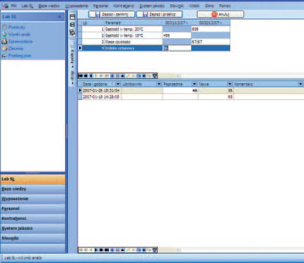

Kiedy należy rozważać wdrożenie takiego systemu? Czego można się po nim spodziewać? Na co zwracać uwagę przy wyborze systemu LIMS? W poniższym tekście postaram się odpowiedzieć na te pytania i przybliżyć problem informatyzacji laboratorium przez wdrożenie spójnego systemu zarządzania. Mam nadzieję, że poniższe rozważania, a także ich kontynuacja, dotycząca wyboru właściwego rozwiązania, okażą się cenne przy podejmowaniu decyzji o zakupie lub modernizacji systemu LIMS.
Coraz trudniej wyobrazić sobie laboratorium, którego praca oraz podejmowane w nim decyzje nie są wspomagane przez komputery i mniej lub bardziej złożone systemy informatyczne. Z oczywistych względów dedykowane rozwiązania informatyczne trafiają najpierw do laboratoriów dużych, i to zarówno pod względem liczby zatrudnionego personelu, jak i liczby wykonywanych oznaczeń, a dopiero w dalszej kolejności są wdrażane w mniejszych laboratoriach. Sytuację, z którą mamy obecnie do czynienia w tej dziedzinie, można porównać do ogólnego procesu informatyzacji biur i przedsiębiorstw, jaki miał miejsce kilka czy kilkanaście lat temu. Poprzez analogię można więc domniemywać, że tak jak dzisiaj trudno jest znaleźć przedsiębiorstwo bez komputerów i biurowych systemów wspomagających jego prace, tak za kilka lat trudno będzie wyobrazić sobie laboratorium bez systemu informatycznego typu LIMS. Już dzisiaj funkcjonowanie średniej wielkości laboratorium, w którym procesy związane z prowadzoną przez nie działalnością nie są organizowane, nadzorowane i archiwizowane przez system informatyczny, jest rzadkie i postrzegane jako nieroztropne.
Wdrożenie systemu LIMS nabiera szczególnej wagi w laboratoriach posiadających wdrożony system jakości lub akredytowanych, które w konsekwencji przyjęcia zasad postępowania, opisanych np. w normie PN/EN ISO/IEC 17025:2005, w serii norm ISO 9000 oraz w zasadach Good (Automated) Laboratory Practices, są zobowiązane nie tylko do przestrzegania pewnych reguł postępowania, ale także do właściwej dokumentacji swojej działalności. Jednym z celów, jakie stawia się przed systemami typu LIMS, jest ułatwienie wdrożenia lub pomoc w utrzymaniu i doskonaleniu systemu zapewnienia jakości. Analiza oczekiwań, jakie stawia się przed wdrożeniem systemu LIMS, wskazuje na to, że system taki nie może być tylko programem komputerowym, ale kompleksowym (tzw. „pod klucz”) rozwiązaniem problemu zarządzania laboratorium przy użyciu współczesnych narzędzi informatycznych. Tym, co stanowi o wartości systemu, jest wiedza i doświadczenie osób, które go stworzyły i wdrażają, metodyka wdrożenia, a także zakres i sposób świadczenia usług związanych z pielęgnacją systemu w okresie jego eksploatacji. Na koniec warto wspomnieć o cechach, którymi powinien charakteryzować się system LIMS, a także o zaletach dobrych rozwiązań, tak by planowana inwestycja okazała się jak najbardziej trafiona.
| Nazwa systemu | Dostawca | Kraj | Zastosowania | Uwagi |
|---|---|---|---|---|
| Bika LIMS | b.d. | Brazylia | Ogólnego zastosowania | Open source |
| Labware LIMS | Thermo corp. | Stany Zjednoczone | Ogólnego zastosowania | Produkt komercyjny |
| Star LIMS | Star corp. | Stany Zjednoczone | Ogólnego zastosowania | Produkt komercyjny |
Warto pamiętać, że wdrożenie powinna charakteryzować kompleksowość rozwiązania, które musi zapewnić producent lub firma wdrażająca system. Nie można ograniczyć się jedynie do zakupu oprogramowania. Oferta i – w konsekwencji jej wyboru – inwestycja powinny obejmować całą fazę wdrożenia, począwszy od analizy potrzeb laboratorium, poprzez dostawę lub modernizację sprzętu komputerowego, instalację systemu, konfigurację (uwzględniającą stosowane w laboratorium procedury), szkolenie, aż po opiekę i pielęgnację systemu w okresie jego eksploatacji.
|  | Fot. 1. Okno wprowadzania wyników analiz w programie CS-17 |
| Podstawową funkcjonalnością systemów klasy LIMS jest wprowadzanie wyników analiz | |